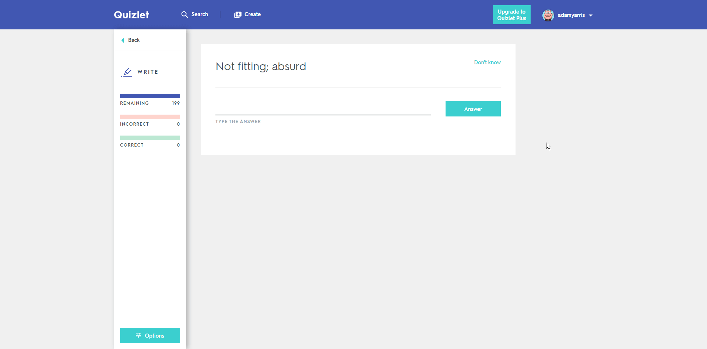

The Quizlet hack shouldn't be used for actual school stuff, it breaks 3 of the Quizlet TOS conditions, so use at your own risk.
The Spanish Solver logo on the corner of the games on the main menu of the Quizlet thing can be toggled, and tables the games that can be used with the hack. There are some settings that pretty much do what they say, they are mostly for the Test hack, move things down if you want stuff faster usually, move them up if stuff is glitching out.
To use the Gravity hack, click on the Gravity game but don't start a game, enter the amount of points you want to earn (Up to 4,294,967,295 points, this is Quizlet's system maximum) and start the hack. It will reload the page, and wait up to 5 seconds, and the game finish screen will pop up saying you got the set amount of points in a game.
There are 2 different types on match hacks, for the 2 different types of match games, match and micromatch. Their game urls end in /match and /micromatch respectively.
Activate the hack after setting the slider to the exact amount of seconds you want to complete the game in, and click the Quizlet button. The page will reload, and there will be lines connecting the correct pairs of words, that move with the terms and definitions. The timer will not be moving and is frozen in the time you set with the slider. Move and combine all the connected pairs together and you how ever long it takes you to complete the game, you will still get the time you set.
Activate the hack after setting the slider to the exact amount of seconds you want to complete the game in, and click the Quizlet button. The page will reload, and at first the game will look normal. Click any term/definition, and a line will connect to the box you selected to its matching pair. Select its matching pair and do that for the rest of the terms and definitions. The timer will be frozen to the time you previously set, and will be the time no matter what you complete the game in.
Enter the test with any settings selected, and activate the hack. Your page may freeze for a few seconds (The freezing time will be longer depending on the length of the test) and the first written question will be colored orange. Click it, and hold Ctrl+V or whatever the key combination is to paste on your system. The correct answer will be filled in automatically, and just hold it work until you are presented with your completed test.
If you are finished or partly through a Spell game when entering it, restart it. Start the Quizlet hack through the extension. The page will reload, and after 2 or 3 seconds so the 'Type what you hear' screen disappears, everything will very quickly be answered, and in a few seconds (Also depending on the amount of terms and definitions) the game will be complete.

If when you enter the game it is partially completed or finished, restart the game. Go into the extension and activate the Quizlet hack. It will reload the page, and within a few seconds you will be prompted with a 100% completed and correct screen.
Open the flashcards, and activate the Quizlet hack through the extension. The page will reload and not display any content for a few seconds, but then will prompt you with the 'You studied X terms' page.